7 Things to Consider Before Building a Timber Deck
Explore important planning considerations, including available space, layout, access, material choices, and how the deck will connect with your home.
Explore thoughtful outdoor design ideas, practical planning advice, material inspiration, and helpful insights to make more of the space beyond your home.
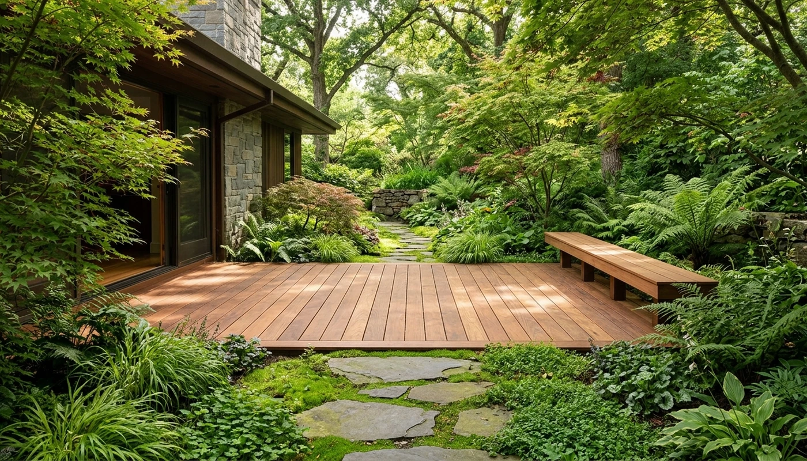
A deeper look at the design principles that transform backyards into seamless, comfortable outdoor living rooms.
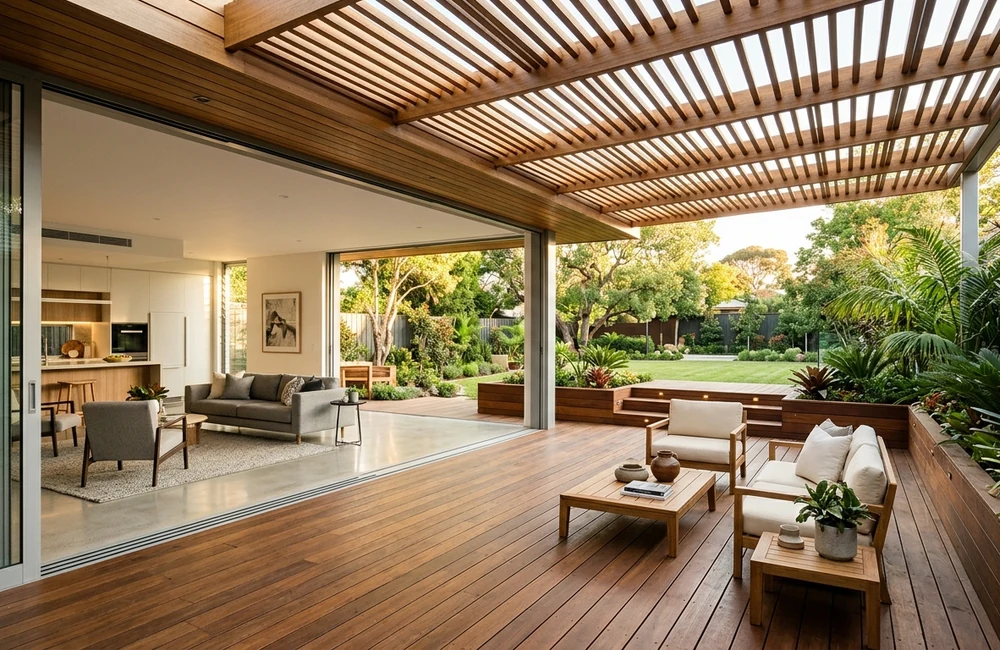
A well-planned outdoor space can become a natural extension of everyday living. Explore how layout, materials, seating, shade, and the connection to your garden can help create a comfortable and welcoming environment.
Discover practical advice, design inspiration, and useful ideas to help you plan an outdoor space that suits your home and lifestyle.
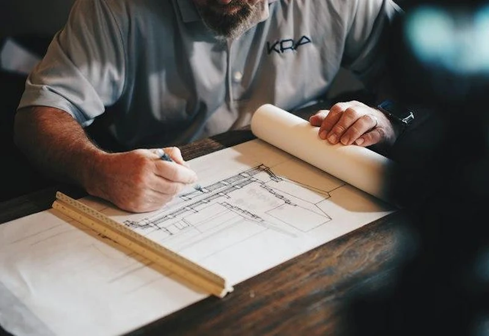
Explore important planning considerations, including available space, layout, access, material choices, and how the deck will connect with your home.
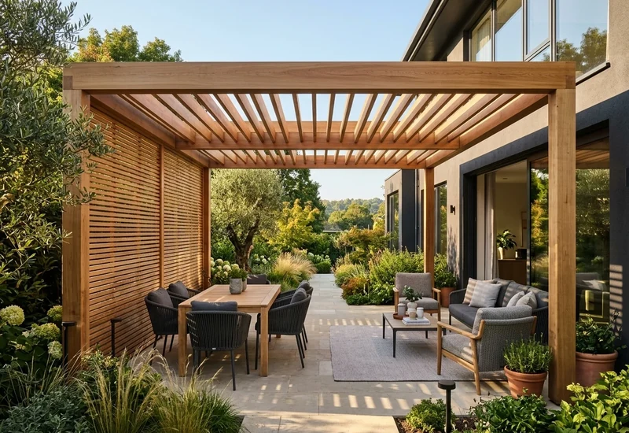
Understand how pergola proportions, structure, shade, and surrounding landscaping can influence the overall feel of your outdoor space.
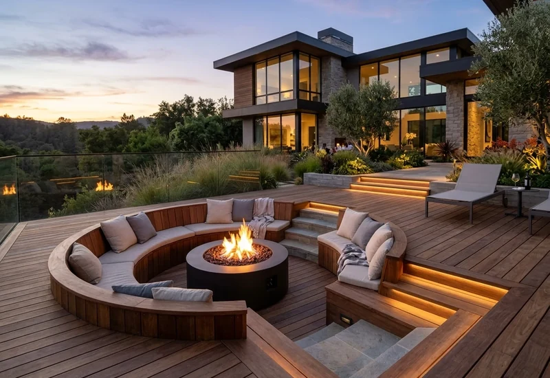
Discover practical ways to use layout, furniture placement, levels, and visual connections to make a smaller outdoor area feel more open.
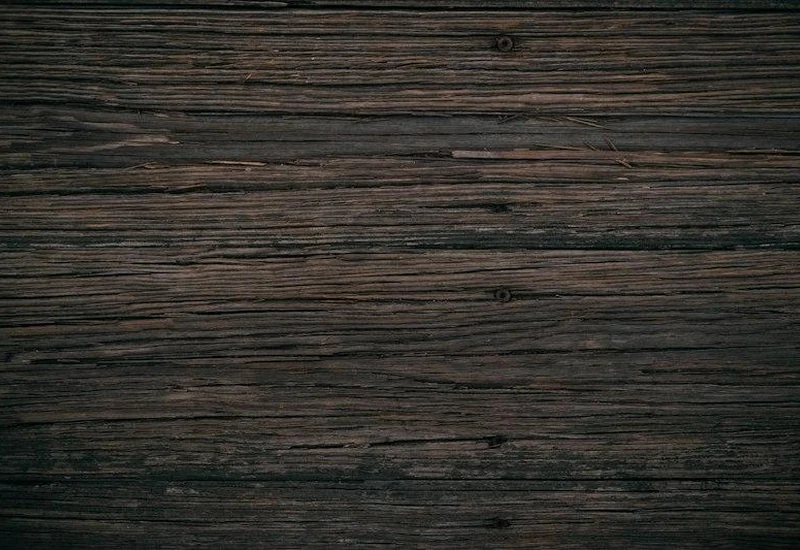
Explore the general differences between timber and composite decking, including appearance, maintenance, durability considerations, and design preferences.
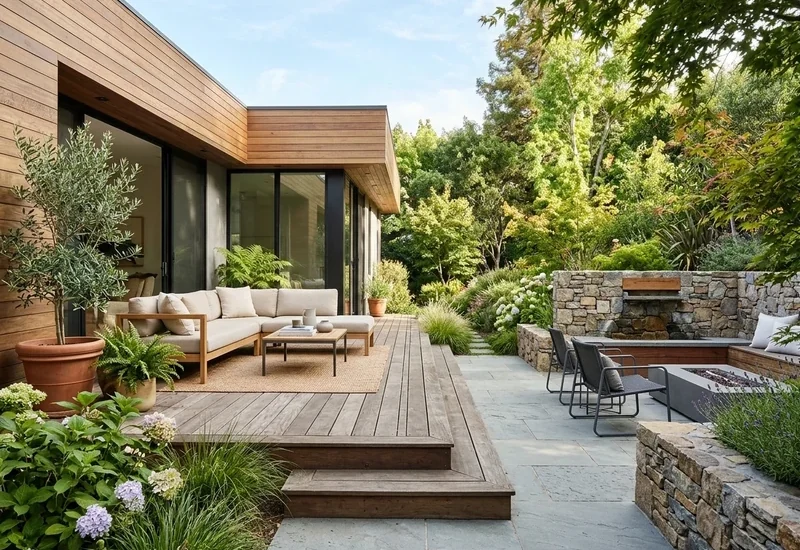
Learn how to think about seating, circulation, shade, lighting, and the relationship between your dining area and the rest of your garden.
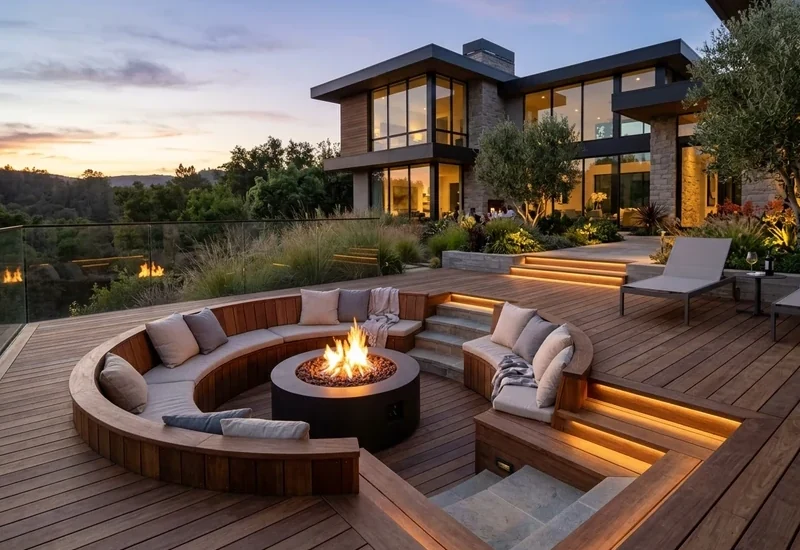
Explore the role of timber, stone, greenery, natural textures, and restrained colour palettes in creating a cohesive outdoor environment.
We couldn't find any articles matching your search criteria. Try a different keyword or reset the category filters.
Explore the topics that matter most when planning, improving, or enjoying an outdoor living space.
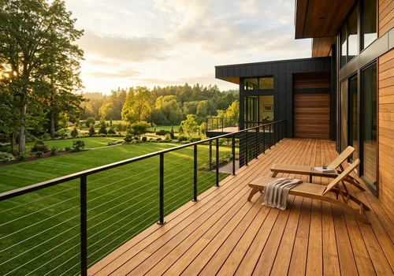
Ideas about deck layouts, timber finishes, levels, and connections to the home.
Explore pergola styles, shade, structural details, and garden integration.
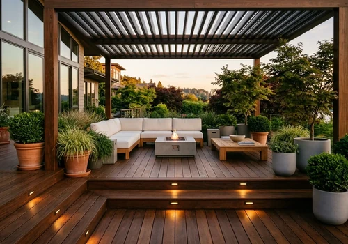
Discover ways to create welcoming spaces for everyday outdoor enjoyment.
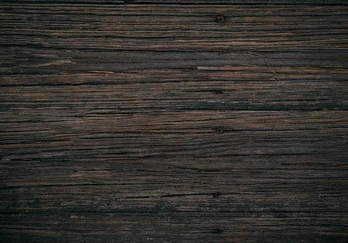
Learn about timber, stone, surfaces, and outdoor material choices.
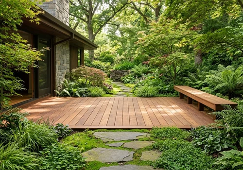
Explore ideas for connecting decks, patios, pergolas, and greenery.
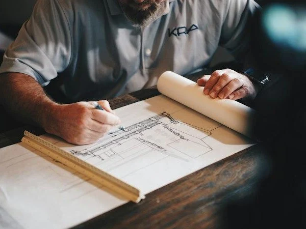
Understand project preparation, maintenance considerations, and long-term care.
Before choosing materials or beginning construction, a little planning can help you make more informed decisions about your outdoor space.
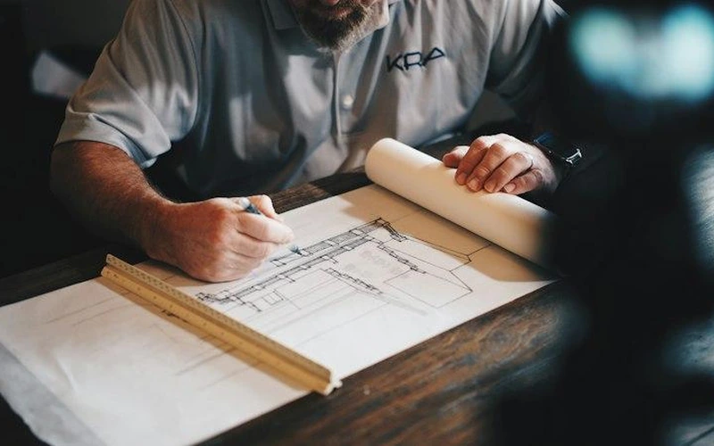
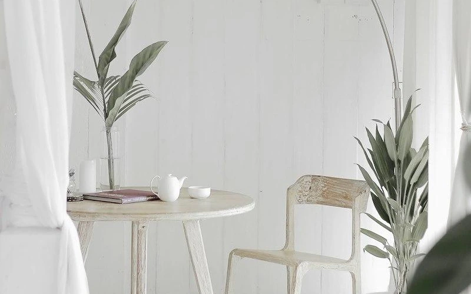
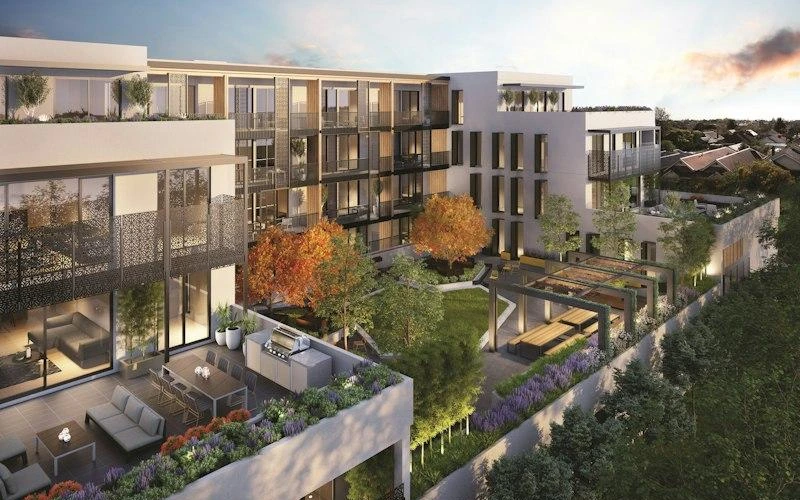
Materials influence how an outdoor space looks, feels, and performs over time. Explore some of the key considerations when selecting finishes for decks, pergolas, and outdoor living areas.
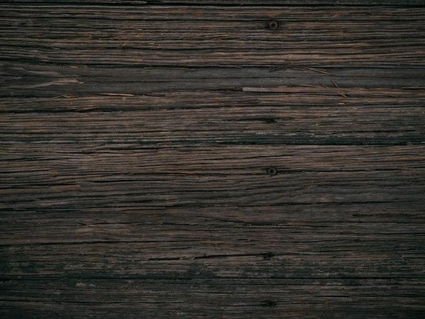
Natural timber offers distinctive grain patterns, warm tones, and a characterful appearance. Material selection should consider the intended use, exposure, maintenance requirements, and suitability for the project.
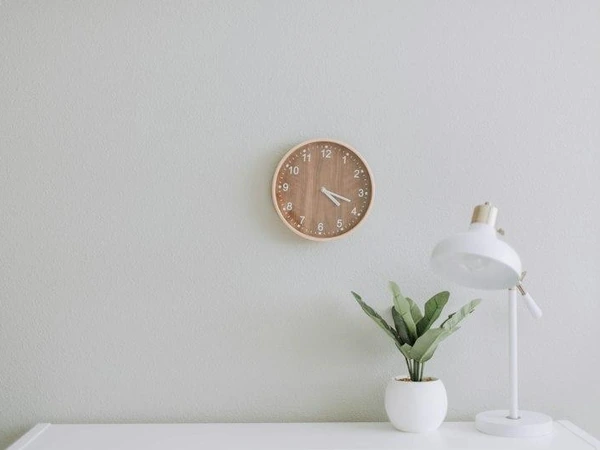
Composite decking is an alternative decking material with a manufactured finish. When comparing options, consider product specifications, appearance, installation requirements, cleaning, and the manufacturer's maintenance guidance.
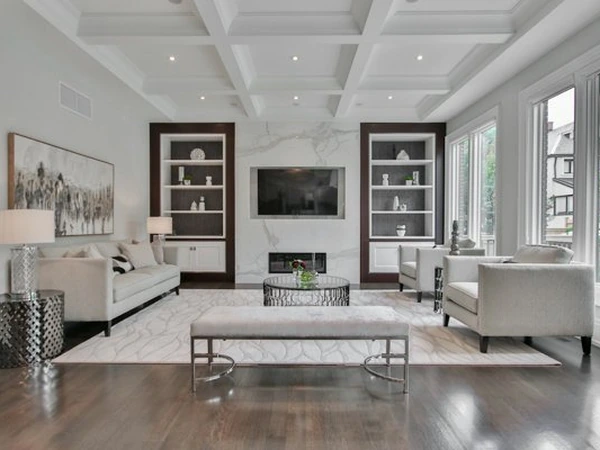
Natural stone can add texture and visual contrast to outdoor environments. Consider the intended application, surface finish, slip resistance, maintenance, and suitability for local weather conditions.
Sometimes the character of an outdoor space comes from the details. Explore ideas that bring comfort, balance, and personality to a garden environment.
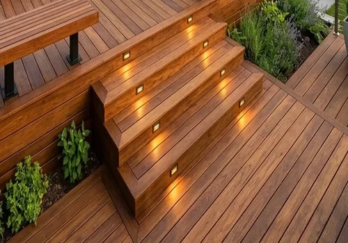
Explore how different lighting positions can help create a comfortable evening atmosphere.
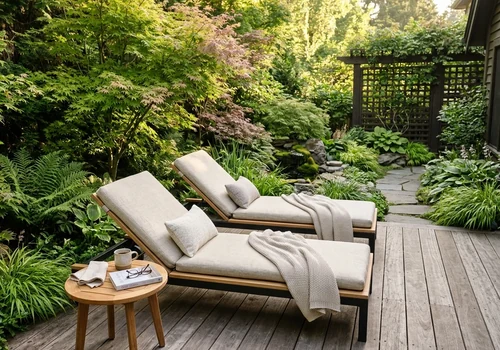
Explore furniture arrangement, seating orientation, and creating inviting places to pause.
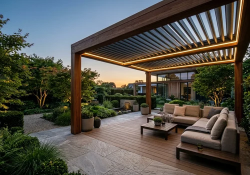
Discover ways to combine garden planting with timber decks and pergolas.
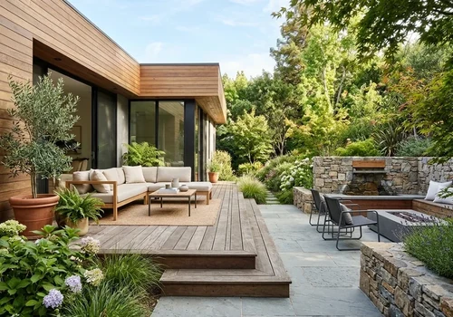
Explore table settings, outdoor accessories, and natural textures for dining spaces.
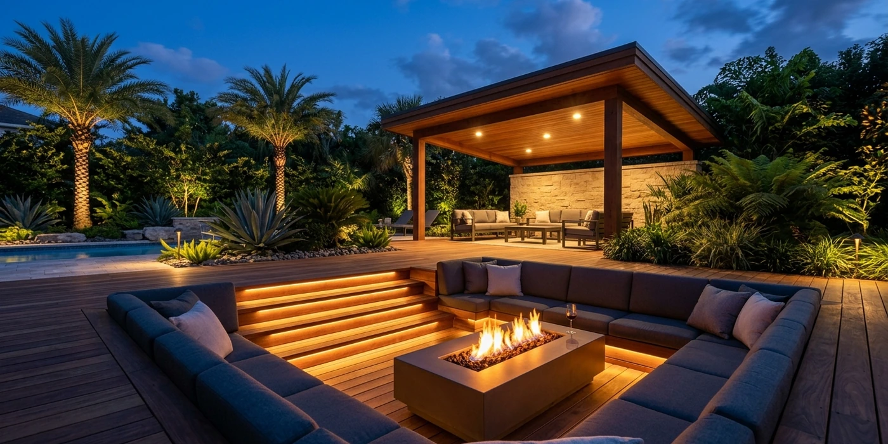
Reading about outdoor design is a great place to start. When you are ready to explore the possibilities for your own home, let's talk about the space you have in mind.